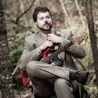

About Me
As a Web Developer with a diverse background of experience, I look forward to applying that diverse experience to future tech-heavy positions. With a B.S. in Music Technology from UNC Asheville (2010), I come from a highly musical background focusing on creation and recording of music as well as the workings of the technology used to do so.
I pride myself at being able to create an organized approach to problem-solving using multiple perspectives. Whether I’m simply sketching out an algorithm or building on my current understanding of HTML5, CSS, Bootstrap, Javascript, JQuery, Node.js, and more, I enjoy using the skills at my disposal to create a fluid and attractive finished product.
I am a quick learner and good at making complicated data and problems more digestible. I am also very passionate about the learning process and developing paths toward understanding. I believe that my skills at writing music and working with synthesizers and recording hardware would make me a good candidate for developing fluid and intuitive User Interfaces and processing the data created therein. The more experience I gain in the web development Coding Bootcamp I am currently enrolled in, the more interest I have in pursuing this type of position.
I hope to bring my skills and enthusiasm for knowledge to a position that is data-driven and will allow me to continue learning and building on my skill sets, while utilizing my experience in full stack web development.